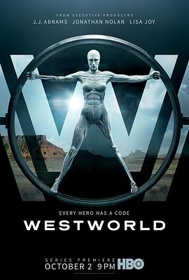

西部世界 第一季 / Westworld Season 1
又名：西方极乐园
wait for 2018
作品信息
| 导演 | 乔纳森·诺兰 / 强尼·坎贝尔 / 理查德·J·刘易斯 / 米歇尔·麦克拉伦 / 尼尔·马歇尔 / 文森佐·纳塔利 / 弗雷德里克·E·O·托耶 / 斯蒂芬·威廉姆斯 |
| 编剧 | 乔纳森·诺兰 / 丽莎·乔伊 / 迈克尔·克莱顿 / 爱德·布鲁贝克 / 多米尼克·米切尔 / 哈莉·韦格林·格罗斯 / 游朝凯 / 丹·迪茨 / 凯茜·林根费尔特 / 丹尼尔·T·汤姆森 |
| 主演 | 埃文·蕾切尔·伍德 / 安东尼·霍普金斯 / 艾德·哈里斯 / 坦迪·牛顿 / 杰弗里·怀特 / 吉米·辛普森 / 詹姆斯·麦斯登 / 本·巴恩斯 / 英格丽德·波尔索·贝达尔 / 卢克·海姆斯沃斯 / 西瑟·巴比特·科努德森 / 安吉拉·萨拉弗安 / 珊农·沃德华德 / 西蒙·夸特曼 / 小克利夫顿·克林斯 / 罗德里戈·桑托罗 / 奥利弗·贝尔 / 莱昂纳多·南 / 詹姆斯·兰德里·赫伯特 / 路易斯·赫特哈姆 / 杰弗里·丹尼尔·菲利普斯 / 泰莎·汤普森 / 米兰达·奥图 / 库里·格拉汉姆 / 凯尔·博恩海默 / 凯姬·迈克拉瑞 / 奥利维亚·梅 / 杰姬·摩尔 / 妲露拉·莱莉 / 史蒂文·奥格 / 罗比·史密斯 / 乔什·克拉克 / 梅森·麦卡利 / 布兰登·范弗利特 / 莉娜·乔格斯 / 吉米·索瑞茜莉 |
| 类型 | 科幻 / 西部 |
| 制片国家/地区 | 美国 |
| 语言 | 英语 |
| 首播 | 2016-10-02(美国) |
| 季数 | 1 |
| 集数 | 10 |
| 单集片长 | 60分钟 |
| IMDb | tt0475784 |
最后一次看到是 2026-08-12T21:12:19+08:00 · 豆瓣原页